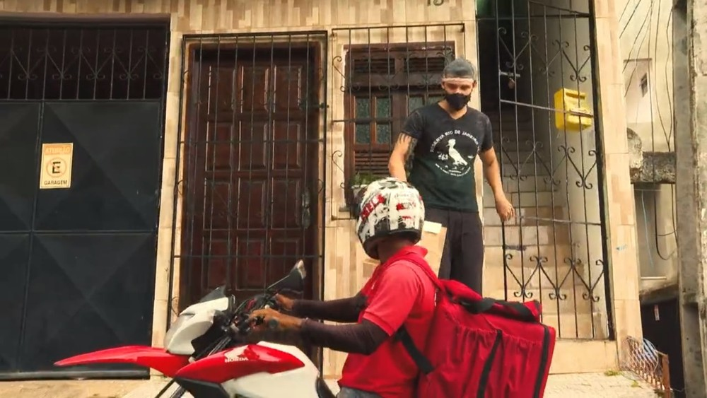

Bem-vindo(a) ao Good News
Com o rápido contágil do Corona Vírus, todos nós fomos pegos de surpresa. Totalmente despreparados, fomos atingidos com um impacto que mudou a nossa forma de viver. Mas nem tudo pode ser tão ruim assim, não é? Estamos aqui, para mostrar a você, 6 notícias boas em meio a tanta tragédia. Confira!
O Brasil tem quase 50 porcento da população vacinada!
Em meio as tragédias que temos vivido nesses quase dois anos, o Brasil vem nos fazendo felizes
com o número de pessoas vacinadas que tá chegando a 50 porcento da população no país.
Somando a primeira, a segunda, a dose única e a dose de reforço são 248.297.408 doses aplicadas
desde o começo da vacinação. Levantamento é feito junto a secretarias de Saúde dos estados.
De ontem para hoje, a primeira dose foi aplicada em 299.089 pessoas, a segunda dose em 571.209,
a dose única em 1.320, e a dose de reforço em 97.221, um total de 968.839 doses aplicadas.
Quer saber mais? Acompanhe a notícia completa no G1.
Se reinventando em meio à pandemia

Com a repentina pandemia do novo Coronavírus, a taxa de desemprego aumentou de forma
gigantesca.
Muita gente que perdeu o emprego está assumindo funções diferentes e até começando novos
empreendimentos para se sustentar; como por exemplo o Uilhame Lima, que antes trabalhava como
porteiro, agora garante a sua renda trabalhando como motoboy.
Conheça melhor essa e outras histórias na
Página do G1
Vencendo a covid-19
Em quase dois anos de pandemia, o que mais vimos foram notícias ruins, porém, veja abaixo um vídeo de uma idosa de 103 anos que venceu essa doença que vem matando tantas pessoas. Este video nos traz um pouco de esperança e com a certeza de que dias melhores virão com novas pesquisas científicas.
Meses de incertezas, tempo de esperança
Infelizmente nessa última quinta 07, O brasil ultrapassou a marca de 600000 mortes em
decorrência da covid-19, entretanto o hospital Giselda Trigueiro localizado no RN, não registra
nem uma morte há cerca de 30 dias.
Veja a emoção do repórter ao dar a notícia.
Como sua empresa pode se reinventar na pandemia
Com a chegada da pandemia, todos fomos afetados. Pequenas empresas, principalmente. Se antes era complicado trabalhar lidando com a concorrência, isso se tornou mais difícil ainda com as ordens restritivas. Com o isolamento repentino, tivemos que readaptar a nossa forma de viver. Para os negócios, as coisas ficaram um pouco ainda piores. Pois além de enfrentar a crise financeira que existe em nosso país, muitas empresas tiveram de fechar suas portas. Se antes algumas profissões vinham perdendo seu lugar para tecnologia, com a pandemia isso aconteceu muito mais. Pois o que se cogitava para ser realizado em anos à frente, teve de ser feito imediatamente. Confira como algumas empresas tiveram de se reinventar no mercado de trabalho.
Como estamos? O que podemos esperar?
Nos últimos meses, tivemos uma mudança de vida drástica. Com o crescente número de pessoas se infectando ao redor do mundo, o jeito que estamos acostumados a viver foi mudado bruscamente. Com a chegada do vírus, podemos perceber, que de nada vale a competição. Não precisamos ser melhores que os nossos semelhantes, pois diante de uma situação como essa, podemos enxergar o quanto somos pequenos, e que a doença não escolhe quem ataca, todos estamos sujeitos. Nos mostra o que mais de importante temos a valorizar. Não é hora de desistir. É hora de lutar, de combater, e futuramente lembrarmos desta triste situação como uma época terrível que ficou pra trás. Vamos ouvir um pouquinho de como as pessoas se sentem, e o que podemos esperar para o futuro que queremos.